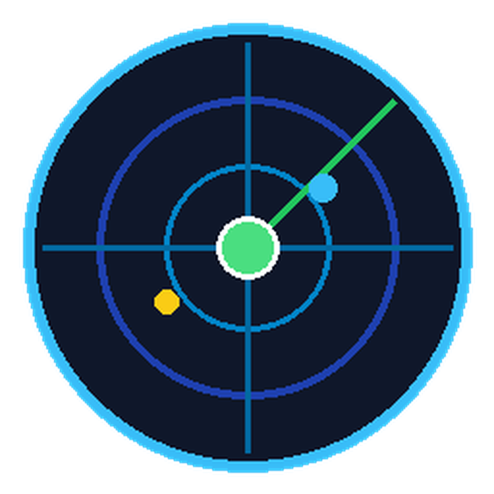
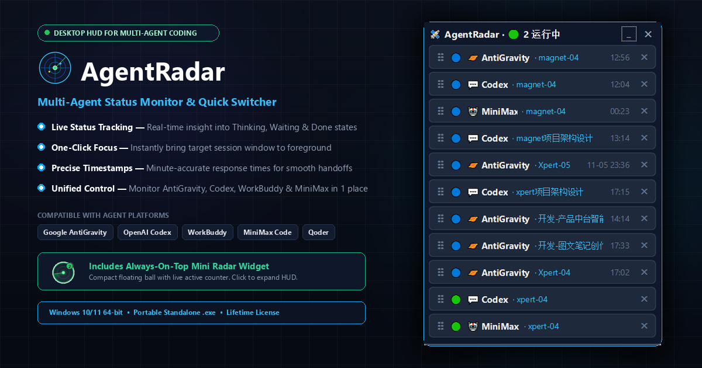

AgentRadar v0.6.1Ambient real-time state monitoring (Thinking / Waiting / Done), pending approval alerts, and instant 1-click window focus for Google AntiGravity, Codex, Qoder & MiniMax.

When you run 3 to 5 autonomous AI coding agents at once, your biggest bottleneck isn't AI intelligence—it's context switching.
Engineered specifically for Windows power users orchestrating parallel coding agents.
A minimalist always-on-top radar ball. Ambient emerald breathing glow with active concurrency counter. Drags anywhere with coordinate persistence.
Deep SQLite/JSONL inspection breaks down individual active threads for AntiGravity, Codex, and Qoder without confusing aggregate numbers.
Low-level Win32 API hooks un-minimize and bring the exact target window into the foreground in milliseconds. Zero taskbar hunting.
Amber glowing pulse with an alert badge immediately warns you when a terminal command or file write is waiting for manual authorization.
Seamless passive integration. Works out of the box with zero plugins or configuration needed.
Whether you are a community tester or want a lifetime commercial license, get started in seconds.
Ideal for community members, developers building Mac adapters, and testers.
For professional developers, solo founders, and global power users.
Absolutely not. AgentRadar is a 100% local, offline-capable executable. It operates by passively reading the local state databases and session transcript streams generated by your installed agents on your Windows disk. Zero data is ever uploaded.
AgentRadar leverages native low-level Windows APIs (including AttachThreadInput and SetForegroundWindow) to instantly un-minimize and focus the target GUI window, bypassing Windows foreground lock restrictions.
The core event-driven state engine is written in Python and is highly modular. Our community members are currently testing macOS menubar and AppleScript-based window focus implementations. The open-source repository contains the full architecture for community adaptation.